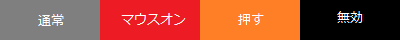
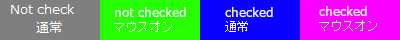
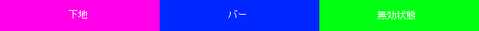
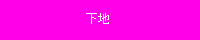

ボタン
ボタンは通常状態・マウスカーソルが乗った状態・マウスボタンが押された状態・無効状態の４つの画像を連結させたものになります。

チェックボックス
チェックボックスはチェックなし通常状態・チェックなしマウスカーソルが乗った状態・チェックあり通常状態・チェックありマウスカーソルが乗った状態の４つの画像を連結させたものになります。

プログレスバー
プログレスバーはバー下地・バー・（必要ならば）無効状態の２つまたは３つの画像を連結させたものになります。

スライダー
スライダーはバー下地のみの画像です。
つまみ部分はボタンと同じ形式です。
